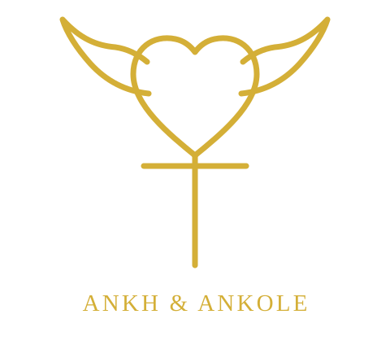

Ankh & Ankole
A visual identity concept for Ankhole Technologies, bringing together the Ankh as a symbol of life and the sweeping horns of Ankole cattle as a nod to heritage.
Explore the Ankhole repository →Back to Tefo’s portfolio

A visual identity concept for Ankhole Technologies, bringing together the Ankh as a symbol of life and the sweeping horns of Ankole cattle as a nod to heritage.
Explore the Ankhole repository →